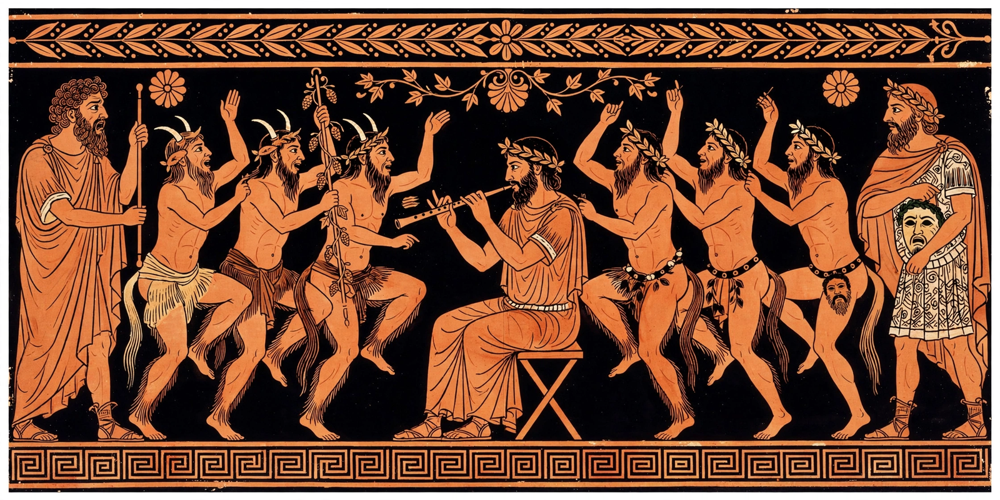

| Satyr play | |
|---|---|
 Actors and satyr chorus on the Pronomos Vase, c. 410 BC | |
| Origin | Athens, late 6th century BC |
| Setting | City Dionysia festival |
| Chorus | Satyrs led by Silenus |
| Complete survivor | Cyclops by Euripides |
The satyr play (Greek: σατυρικόν δράμα) is a genre of ancient Greek drama, a burlesque form of tragedy that preserved the chorus of satyrs — half-goat, half-human followers of Dionysus — and combined heroic myth with coarse humor, drunkenness, and sexual innuendo. Each tragedian competing at the City Dionysia in Athens presented a satyr play as the fourth piece after his three tragedies, offering comic relief within the Theatre of Dionysus.
A satyr play retold a myth, typically an invention, liberation, or marvel from the heroic age, with the satyrs inserted into the story as servants, slaves, or cowardly bystanders under their aged father Silenus. The chorus wore loincloths with horse tails and phalluses; heroes spoke a register close to tragic diction while the satyrs spoke colloquially, creating comic incongruity. Endings were happy. The standard three-actor structure, iambic dialogue, and strophic choral odes linked the genre formally to tragedy, while its tone anticipates elements of later comedy and of the Roman fabula Atellana.
The genre was traditionally credited to Pratinas of Phlius around 500 BC. Aeschylus was considered its master in antiquity, and Sophocles and Euripides also wrote celebrated examples. Only one satyr play survives complete: Euripides' Cyclops, which dramatizes Odysseus' encounter with Polyphemus with the satyrs enslaved as the giant's shepherds. Substantial fragments — roughly half — of Sophocles' Ichneutae (The Trackers), about the infant Hermes inventing the lyre, were recovered from Oxyrhynchus papyri published in 1912. Fragments of Aeschylus' Dictyulci (Net-Haulers) also survive.
Scholars debate the genre's ritual role: as a survival of tragedy's Dionysiac origins — the satyrs were "tragedy at play" — and as a release after three tragedies, reaffirming the festival's ties to Dionysus in a way tragedy itself increasingly did not. The satyr play influenced Hellenistic and Roman taste for mythological burlesque and stands behind the later European pastoral and the comic afterpiece tradition.